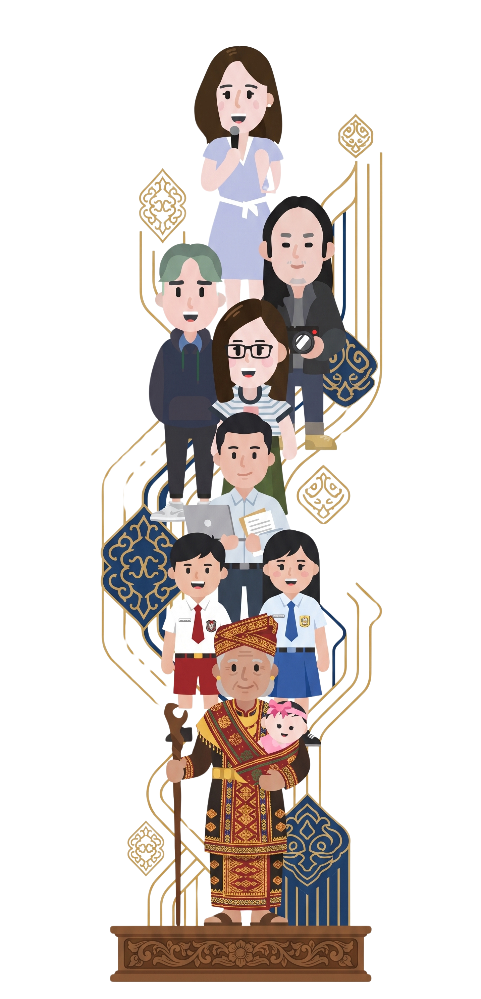

Semarak Main Basamo Incung:
Jelajahi Dunia Aksara Incung!
Pelajari aksara Incung bersama SERAMBI!
Mulai Kenali
Pelajari aksara Incung bersama SERAMBI!
Mulai Kenali
Warisan budaya yang menyimpan makna dan identitas. Pelajari bentuk, bunyi, dan cara membacanya dengan mudah dan menyenangkan.

Cukup ketik, dan lihat bagaimana bahasamu hidup dalam bentuk aksara tradisional.
Ikuti langkahnya, pahami aturannya, dan rasakan pengalaman belajar sambil bermain.

"Melalui Damdas, kami ingin menghidupkan kembali cara tradisional masyarakat Jambi dalam mengasah strategi dan logika. Ini membuktikan bahwa permainan lokal memiliki kedalaman nilai kognitif yang tak kalah dengan permainan modern seperti catur, sekaligus mengajarkan sportivitas dalam berinteraksi"
"Aksara Incung bukan sekadar simbol kuno, melainkan identitas peradaban Jambi yang luhur. Dengan meletakkan aksara ini di atas bidak permainan, kami melakukan 're-edukasi' agar generasi muda tidak merasa asing dengan tulisan leluhurnya sendiri. Kami membawa aksara dari museum ke meja bermain."
"Sesuai namanya, Main Basamo, krida ini bersifat inklusif. Tidak ada batasan usia atau latar belakang untuk belajar Aksara Incung. Permainan ini menjadi ruang dialek kreatif di mana komunikasi antar pemain terbangun, menciptakan hubungan sosial yang harmonis melalui bahasa dan tradisi."
"Kami menyadari tantangan zaman. Oleh karena itu, SERAMBI hadir sebagai jembatan literasi. Melalui QR Code yang terhubung ke modul digital, kami menggabungkan cara belajar konvensional (fisik) dengan kemudahan teknologi. Ini adalah bentuk nyata digitalisasi budaya tanpa menghilangkan esensi interaksi tatap muka."
"SERAMBI bukan hanya tentang siapa yang menang atau kalah dalam permainan, tapi tentang bagaimana kita memenangkan kembali identitas budaya Jambi di hati generasi muda."